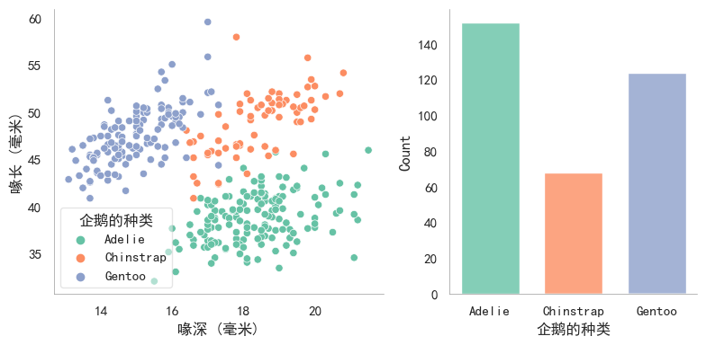

Python可视化
Python可视化教程
本文章将使用matplotlib,seaborn进行可视化教程。
1.Seaborn简介
1.1Seaborn快速上手
import seaborn as sns |

1.2可视化步骤
从上面的示例可以看到，使用Seaborn进行可视化主要有4个主要步骤。
- 导入依赖包
导入seaborn包并简写为sns。 - 设置绘图风格
设置绘图风格，例如，“whitegrid"；对坐标轴、图例、网格线等图表属性个性化设置。 - 准备绘图数据
seaborn支持多种数据集格式，可根据可视化数据集的格式灵活准备数据。 - 挑选seaborn函数绘图
挑选符合数据的函数进行绘图。
1.2绘图函数
从架构层面，seaborn主要有两大类绘图函数，图级别绘图函数（figure-level）、轴级别绘图函数（axes-level）。
从功能层面，seaborn绘图函数可以划分为以下几类:
- 美化函数（aesthetics）
美化图形比例尺度（the scaling of plot elements）、图形风格（the general style of the plots）、图形配色（the color palette/colormap)。 - 单个图函数
绘制相关关系图（Relational plots）、分布关系图（Distribution plots）、分类关系图 (Categorical plots)、回归关系图（Regression plots）、矩阵关系图 (Matrix plots) 、统计估计和误差棒 (Statistical estimation and error bars) 。 - 组合图函数
同时展示多个子图表或图形，以便进行比较或展示相关信息。包含分面图 (Facet grids)、配对关系图 (Pair grids) 、组合关系图 (Joint grids)。
2.Seaborn图形美化
seaborn中从3个方面美化图形:
- 比例尺度 (context)，设置the scaling of plot elements，例如，图中文字大小、标记marker大小、线条宽度等；
- 风格（style），设置the general style of the plots，例如，图中网格线是否开启、颜色、线宽等；
- 配色（palette），设置color palette，例如，Set1、#a1c9f4、red等。（使用多巴胺配色能使得图片更加清晰、美观）
2.1context设置图形比例
查看context内容可以使用：
sns.plotting_context() |
{'font.size': 9.600000000000001,
'axes.labelsize': 9.600000000000001,
'axes.titlesize': 9.600000000000001,
'xtick.labelsize': 8.8,
'ytick.labelsize': 8.8,
'legend.fontsize': 8.8,
'legend.title_fontsize': 9.600000000000001,
'axes.linewidth': 0.4,
'grid.linewidth': 0.3,
'lines.linewidth': 1.5,
'lines.markersize': 6.0,
'patch.linewidth': 1.0,
'xtick.major.width': 1.25,
'ytick.major.width': 1.25,
'xtick.minor.width': 1.0,
'ytick.minor.width': 1.0,
'xtick.major.size': 6.0,
'ytick.major.size': 6.0,
'xtick.minor.size': 4.0,
'ytick.minor.size': 4.0}
即：
'font.size': 12.0, # 字体大小 |
设置context内容:
可以使用set_context设置，但是不会改变图标整体的样式。
seaboen内置了四套context设置，分别为paper,notebook,talk,poster。
下面进行展示。
import seaborn as sns |

上图可清晰的展示context变化，图形中字体、线宽等属性的变化。
在使用某个已经内置的context方案时，还可以通过rc单独设置context中的任意参数，
import seaborn as sns |
<Axes: >
此外，可通过font_scale设置整个图的字体缩放
import seaborn as sns |
<Axes: >
2.2style设置图形通用样式
查看style内容：
sns.axes_style() |
{'axes.facecolor': 'white',
'axes.edgecolor': 'black',
'axes.grid': False,
'axes.axisbelow': 'line',
'axes.labelcolor': 'black',
'figure.facecolor': 'white',
'grid.color': '#b0b0b0',
'grid.linestyle': '-',
'text.color': 'black',
'xtick.color': 'black',
'ytick.color': 'black',
'xtick.direction': 'out',
'ytick.direction': 'out',
'lines.solid_capstyle': <CapStyle.projecting: 'projecting'>,
'patch.edgecolor': 'black',
'patch.force_edgecolor': False,
'image.cmap': 'viridis',
'font.family': ['sans-serif'],
'font.sans-serif': ['DejaVu Sans',
'Bitstream Vera Sans',
'Computer Modern Sans Serif',
'Lucida Grande',
'Verdana',
'Geneva',
'Lucid',
'Arial',
'Helvetica',
'Avant Garde',
'sans-serif'],
'xtick.bottom': True,
'xtick.top': False,
'ytick.left': True,
'ytick.right': False,
'axes.spines.left': True,
'axes.spines.bottom': True,
'axes.spines.right': True,
'axes.spines.top': True}
即：
'axes.facecolor': '#EAEAF2', # 坐标轴背景颜色 |
设置style内容:
set_style()可设置style，seanborn内置了五套style设置，分别为darkgrid, whitegrid, dark, white, ticks，效果如下：
import seaborn as sns |
同理，也可以使用rc进行独立设置某个参数：
# rc独立设置某个参数 |

2.3palette设置图形配色
设置图形配色palette目的在于有效地展示数据、让图表吸引人，seaborn调色板palette可分为3大类：
定性调色板（qualitative palettes）：适用于分类数据（categorical data），例如，一项调查中的满意度评级（“非常不满意”，“不满意”，“中立”，“满意”，“非常满意”）中人员占比数据。
current_palette = sns.color_palette() |
顺序调色板（sequential palettes）：适用于数值数据（numeric data），例如，一周中每天温度值数据。
sns.palplot(sns.color_palette("Reds", 10)) |
离散调色板（diverging palettes）：适用于在数值数据中表示具有分类边界的情况（numeric data with a categorical boundary），例如，人群中中12-18岁、19-24岁、25-35岁各区间人员占比数据。
sns.palplot(sns.color_palette("coolwarm", 10)) |

seaborn提供了多种配色设置函数。
2.3.1构建颜色
cubehelix_palette
基于cubehelix系统使用cubehelix_palette函数构建sequential palettes，生成一个亮度线性递减（或递增）的colormap，使用该颜色生成的图形无论是打印成黑白图像或被色盲者观看时都依然能够清晰展现数据的不同特征。
cubehelix_palette使用方法:
import seaborn as sns |
[[0.9312692223325372, 0.8201921796082118, 0.7971480974663592], [0.8559578605899612, 0.6418993116910497, 0.6754191211563135], [0.739734329496642, 0.4765280683170713, 0.5959617419736206], [0.57916573903086, 0.33934576125314425, 0.5219003947563425], [0.37894937987024996, 0.2224702044652721, 0.41140014301575434], [0.1750865648952205, 0.11840023306916837, 0.24215989137836502]]
当参数as_cmap设置为False时，同时输出6种元组格式颜色
上面的例子为了介绍cubehelix_palette的各个参数，参数全部列出。其实，实际使用时，只需要修改个别参数，大部分都可以直接使用默认值。
例如:
#输出cubehelix_palette默认colormap |
#修改n_colors，输出10中颜色 |
#修改rot |
dark_palette
混合深色和指定颜色，使用dark_palette函数构建sequential palettes，生成一个深色到指定色的colormap。
适用场景：适用于数据的范围在感兴趣的高值数据～不感兴趣的低值数据之间的变化情况。
dark_palette使用方法:
import seaborn as sns |
同cubehelix_palette，dark_palette实际使用时，只需要修改个别参数，大部分都可以直接使用默认值。
例如；
#修改终止颜色 |
#修改reverse |
#修改input为husl颜色系统 |
color 参数
color 参数是一个元组，用于指定生成调色板的基础颜色。在 HUSL 颜色空间中，这个元组包含三个值：
- 色调（Hue），取值范围为 0 到 360，表示颜色的基本类型，如红色、绿色、蓝色等。
- 饱和度（Saturation），取值范围为 0 到 100，表示颜色的强度或纯度。值越高，颜色越饱和。
- 亮度（Lightness），取值范围为 0 到 100，表示颜色的明暗程度。值越高，颜色越亮。
input 参数
input 参数是一个字符串，用于指定输入颜色的颜色空间。
在上面这个例子中，input="husl" 表示使用 HUSL 颜色空间来解释 color 参数的值。HUSL（Human-friendly HSL）是一种颜色空间系统，旨在使颜色选择和调色更加直观。
mpl_palette
基于matplotlib的colormap，使用mpl_palette函数构建diverging/sequential palettes，生成一个离散或者连续的colormap。
mpl_palette使用方法：
import seaborn as sns |
重点强调name参数：
当name选择matplotlib中diverging型调色盘时，如Paired_r，生成也为diverging型（离散型）颜色；
当name选择matplotlib中sequential型调色盘时，如Greens，生成也为sequential型（顺序型）颜色；
#修改name为sequential型调色盘 Greens |
name可选的参数如下，其中包含GraphPad Prism、tableau等软件的colormap。
import matplotlib.pyplot as plt |
magma
inferno
plasma
viridis
cividis
twilight
twilight_shifted
turbo
Blues
BrBG
BuGn
BuPu
CMRmap
GnBu
Greens
Greys
OrRd
Oranges
PRGn
PiYG
PuBu
PuBuGn
PuOr
PuRd
Purples
RdBu
RdGy
RdPu
RdYlBu
RdYlGn
Reds
Spectral
Wistia
YlGn
YlGnBu
YlOrBr
YlOrRd
afmhot
autumn
binary
bone
brg
bwr
cool
coolwarm
copper
cubehelix
flag
gist_earth
gist_gray
gist_heat
gist_ncar
gist_rainbow
gist_stern
gist_yarg
gnuplot
gnuplot2
gray
hot
hsv
jet
nipy_spectral
ocean
pink
prism
rainbow
seismic
spring
summer
terrain
winter
Accent
Dark2
Paired
Pastel1
Pastel2
Set1
Set2
Set3
tab10
tab20
tab20b
tab20c
magma_r
inferno_r
plasma_r
viridis_r
cividis_r
twilight_r
twilight_shifted_r
turbo_r
Blues_r
BrBG_r
BuGn_r
BuPu_r
CMRmap_r
GnBu_r
Greens_r
Greys_r
OrRd_r
Oranges_r
PRGn_r
PiYG_r
PuBu_r
PuBuGn_r
PuOr_r
PuRd_r
Purples_r
RdBu_r
RdGy_r
RdPu_r
RdYlBu_r
RdYlGn_r
Reds_r
Spectral_r
Wistia_r
YlGn_r
YlGnBu_r
YlOrBr_r
YlOrRd_r
afmhot_r
autumn_r
binary_r
bone_r
brg_r
bwr_r
cool_r
coolwarm_r
copper_r
cubehelix_r
flag_r
gist_earth_r
gist_gray_r
gist_heat_r
gist_ncar_r
gist_rainbow_r
gist_stern_r
gist_yarg_r
gnuplot_r
gnuplot2_r
gray_r
hot_r
hsv_r
jet_r
nipy_spectral_r
ocean_r
pink_r
prism_r
rainbow_r
seismic_r
spring_r
summer_r
terrain_r
winter_r
Accent_r
Dark2_r
Paired_r
Pastel1_r
Pastel2_r
Set1_r
Set2_r
Set3_r
tab10_r
tab20_r
tab20b_r
tab20c_r
rocket
rocket_r
mako
mako_r
icefire
icefire_r
vlag
vlag_r
flare
flare_r
crest
crest_r
每种colormap效果如下：
import matplotlib.pyplot as plt |
hls_palette
用HLS颜色系统使用hls_palette函数构建恒定亮度和饱和度的palettes，生成适用于categorical or cyclical类数据的colormap。
HSL颜色系统由色相（Hue）、饱和度（Saturation）和亮度（Lightness）三个要素组成。
色相H表示颜色的种类或者说是色彩的名称（比如红色、绿色、蓝色等），饱和度S表示颜色的纯度或者说是灰度的程度，而亮度L则表示颜色的明暗程度。
hls_palette使用方法：
import seaborn as sns |
husl_palette
用HUSL颜色系统使用husl_palette函数构建恒定亮度和饱和度的palettes，生成适用于categorical or cyclical类数据的colormap。
HUSL（Human-friendly HSL）颜色系统是HSL的改进版本，提供更加人类友好的颜色。
HUSL考虑了人眼对颜色的感知方式，更好地平衡了色相、饱和度和亮度之间的关系，这使得在图形和数据可视化中使用HUSL配色更吸引人。
husl_palette使用方法，和hsl_palette使用方法完全一样
import seaborn as sns |
import seaborn as sns |
diverging_palette
用HUSL颜色系统使用diverging_palette函数构建diverging palettes，生成适用于diverging类数据的colormap。
diverging_palette使用方法：
import seaborn as sns |
2.3.2交互式选色器
seaborn提供了交互式选色器，帮助预览各种colormap。
import seaborn as sns |
interactive(children=(Dropdown(description='name', options=('Greys', 'Reds', 'Greens', 'Blues', 'Oranges', 'Pu…
[(0.9575547866205305, 0.9575547866205305, 0.9575547866205305),
(0.9012072279892349, 0.9012072279892349, 0.9012072279892349),
(0.8328950403690888, 0.8328950403690888, 0.8328950403690888),
(0.7502191464821223, 0.7502191464821223, 0.7502191464821223),
(0.6434140715109573, 0.6434140715109573, 0.6434140715109573),
(0.5387158785082661, 0.5387158785082661, 0.5387158785082661),
(0.440322952710496, 0.440322952710496, 0.440322952710496),
(0.342883506343714, 0.342883506343714, 0.342883506343714),
(0.22329873125720878, 0.22329873125720878, 0.22329873125720878),
(0.10469819300269129, 0.10469819300269129, 0.10469819300269129)]
sns.choose_cubehelix_palette() |
interactive(children=(IntSlider(value=9, description='n_colors', max=16, min=2), FloatSlider(value=0.0, descri…
[[0.9312692223325372, 0.8201921796082118, 0.7971480974663592],
[0.8888663743660877, 0.7106793139856472, 0.7158661451411206],
[0.8314793143949643, 0.5987041921652179, 0.6530062709235388],
[0.7588951019517731, 0.49817117746394224, 0.6058723814510268],
[0.6672565752652589, 0.40671838146419587, 0.5620016466433286],
[0.5529215689527474, 0.3217924564263954, 0.5093718054521851],
[0.43082755198027817, 0.24984535814964698, 0.44393960899639856],
[0.29794615023641036, 0.18145907625614888, 0.35317781405034754],
[0.1750865648952205, 0.11840023306916837, 0.24215989137836502]]
sns.choose_light_palette() |
interactive(children=(IntSlider(value=179, description='h', max=359), IntSlider(value=49, description='s', max…
[(0.928400678190116, 0.9478103788759907, 0.944453036504835),
(0.8628220913788363, 0.8970612077691371, 0.8916872171349329),
(0.7972435045675565, 0.8463120366622834, 0.8389213977650309),
(0.7293228253701598, 0.7937503951587563, 0.7842710848462038),
(0.6637442385588801, 0.7430012240519027, 0.7315052654763018),
(0.5958235593614833, 0.6904395825483758, 0.6768549525574746),
(0.5302449725502036, 0.639690411441522, 0.6240891331875726),
(0.46232429335280684, 0.587128769937995, 0.5694388202687455),
(0.3967457065415272, 0.5363795988311414, 0.5166730008988434),
(0.33116711973024743, 0.4856304277242877, 0.46390718152894134)]
2.3.3
绘图函数中palette设置
如sns.boxplot(palette=palette)中的palette参数：
import seaborn as sns |
set_palette设置颜色
可以通过set_palette设置颜色
import seaborn as sns |
2.4联合美化
seaborn提供了一个set_theme函数，可同时联合context,style,palette美化图表。
set_theme使用方法
import seaborn as sns |
以上是set_theme的默认参数，如果要调用默认设置，sns.set_theme()即可。
以下实例介绍set_theme参数修改对图形外观的影响，
2.4.1 不使用set_theme
当seaborn不使用set_theme时，将会直接使用set_theme中的默认参数绘制图
import seaborn as sns |
import seaborn as sns |
2.4.2 set_theme设置context
import seaborn as sns |
2.4.3 set_theme设置style
五套style内置，分别为darkgrid, whitegrid, dark, white, ticks。
import seaborn as sns |
2.4.4 set_theme设置palette
import seaborn as sns |
2.4.5 set_theme设置rc
import seaborn as sns |
2.4.6 set_theme同时设置context、style、palette、rc
import seaborn as sns |
3.seaborn两大类绘图函数
seaborn两大类绘图函数figure-level,axes-level
本章节主要是介绍这两大类绘图函数的区别：
- 坐标轴级别（axes-level）绘图函数
- 图形级别（figure-level）绘图函数
3.1 axes-level
axes-level绘图函数是将数据绘制在matplotlib.pyplot.Axes对象上，
此类函数可以直接使用matplotlib rcParams中的参数。
例如，使用penguins数据集，直方图展示不同“企鹅的种类”的"喙长 (毫米)"分布关系时，可直接使用axes-level绘图函数histplot
import seaborn as sns |
<class 'matplotlib.axes._axes.Axes'>
可以看到g是一个matplotlib.pyplot.Axes对象
axes-level绘图函数还有scatterplot,lineplot,stripplot,swarmplot等。
3.2 figure-level绘图函数
figure-level绘图函数将数据绘制在seaborn.axisgrid.FacetGrid对象上，
此类函数拥有区别于matplotlib rcParams中的参数，
每个figure-level绘图函数都提供了统一的axes-level接口，kind参数设置。
例如，3.1节的图也可以使用figure-level绘图函数displot，只需要指定 kind="hist"
import warnings |
<class 'seaborn.axisgrid.FacetGrid'>
可以看到g是一个seaborn.axisgrid.FacetGrid对象。
figure-level绘图函数还有jointplot,relplot,displot等。
3.3 figure-level、axes-level比较
大部分情况下，figure-level和axes-level函数功能非常相似，但也存在一些差异。
例如，figure-level中图例被放置在图形之外，axes-level中则将图例被放置在图形之内（注意比较3.1节和3.2节）。
下文详细介绍figure-level和axes-level的差异。
3.3.1 figure-level多子图
figure-level最擅长多子图（subplot）绘制。
例如，3.1节和3.2节中的堆叠直方图不容易直观看出每一种企鹅的“喙长 (毫米)”分布。
解决该问题，可以尝试多子图。
每一种企鹅绘制一个“喙长 (毫米)”分布直方图，figure-level函数一行代码实现多子图：
sns.displot( |
<seaborn.axisgrid.FacetGrid at 0x20e09a27810>
虽然figure-level多子图绘制很便捷，但是，如果想单独设置某个子图就不够灵活，例如:
sns.displot( |
<seaborn.axisgrid.FacetGrid at 0x20e088daf90>
binwidth可以高效设置所有子图的bin宽度，但是并不能设置某一个子图。
3.3.2 axes-level多子图个性化
axes-level也可以绘制多子图，需要通过参数ax指定子图。
seaborn内部调用matplotlib.pyplot.gca()激活当前子图为需要绘图的对象，例如：
fig, axs = plt.subplots( #subplots添加3个子图 |
效果类似figure-level绘制多子图，但是axes-level代码量明显增多。
不过相比于figure-level，axes-level显然更擅长每个子图的个性化。例如：
f, axs = plt.subplots( #subplots添加两个子图1,2, |

未完待续！！！
g = sns.PairGrid( |